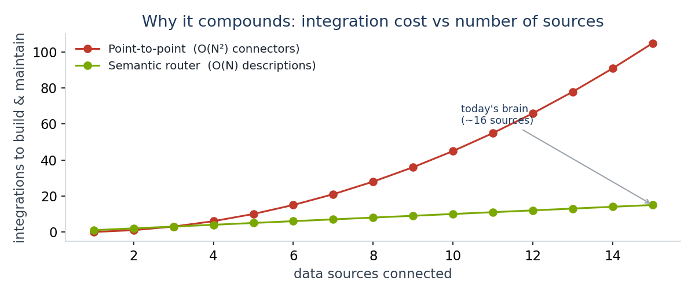
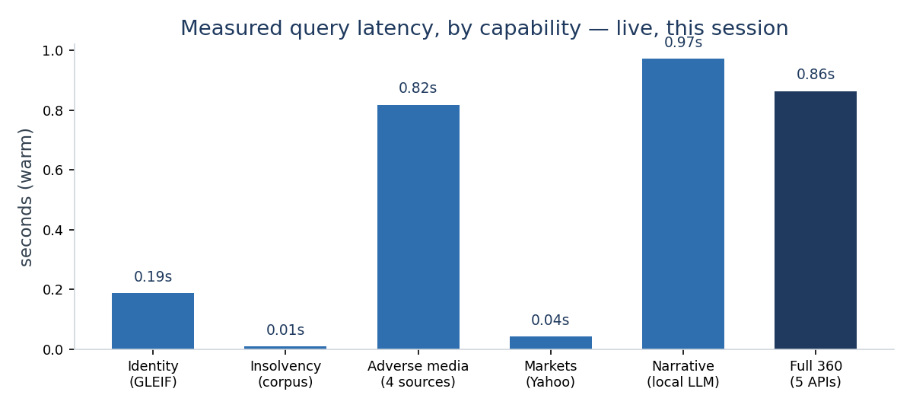
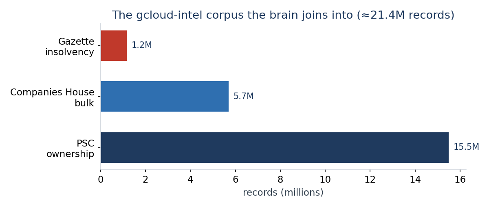

An engineering write-up of a working demonstration: how it works, what was built (fourteen live data sources behind one query), a step-by-step trace, a live view of every tool, the join into a 21.4-million-record UK distress corpus, a tailored read on Big Ideas Group's own portfolio, and an honest gap analysis.
Every result, latency and screenshot in this document was captured live from the running Orbital stack during one build session — not mocked. Where something is designed-but-incomplete it is marked [gap] and explained in §7.
The concept is a semantic data router. Rather than a human pre-building a connection between every pair of systems, each source is described once — by the meaning of the data it exchanges — and the engine (Orbital) works out which sources to call, in what order, to answer a request. You ask for a result by what it is; the router finds the path, runs it, and emits the lineage of how it was built.
This briefing is deliberately honest about proven-vs-designed:
| Term | What it actually means |
|---|---|
| Semantic type | A named meaning for a value — not string but CompanyName, Postcode. Two APIs that bind the same type can be joined automatically. |
| Taxi / Orbital | Taxi is the open language that describes each API in semantic types; Orbital is the engine that plans and runs the multi-API call graph. Taxi is open; the engine is the product. |
| TaxiQL | The query: given { a } find { B } — "I have an A, get me a B." You never name the APIs. |
| Adapter | One small Taxi file describing a single source: a response model with jsonPath bindings + an HTTP operation. |
| Lineage | The auditable graph Orbital emits for every answer — which fact entered, which services ran, in what order. |
| Identity spine | The shared key (CompanyRegistrationNumber) that lets one company be recognised across every source. |
| GLEIF / PSC | GLEIF: the free global registry — name → LEI + Companies House number, no key. PSC: "Persons with Significant Control" — who owns/controls each UK company. |
Four ideas. (1) Shared semantic types — each API's fields are bound to meanings; Police, TfL and
Open-Meteo all bind the same Latitude/Longitude without knowing about each other.
(2) Describe, don't integrate — an adapter is a few lines; there is no point-to-point code between any two
APIs. (3) Query-time composition — Orbital matches the output type of one operation to the input of another
and builds the plan; from a name alone it derives name → GLEIF → postcode → coordinates → crime.
(4) Lineage as proof — every answer carries an auditable graph of how it was built.

On a base of 9 callable UK-gov APIs, this session added the keystone bridge and a set of enrichment, distress, markets, code and personal adapters — fourteen live sources behind one query. Each adapter is a single self-contained Taxi file; none required editing another.
| Adapter | From → to (semantic) | Auth | Role |
|---|---|---|---|
| Postcodes.io ★ | Postcode → Lat/Lng | none | Keystone — fuses identity ↔ geo |
| GLEIF | CompanyName → LEI, CH number, Postcode | none | Name → identity; the spine key |
| Insolvency (gcloud-intel) | CH number → distress profile | none* | Distress · phoenix risk · contracts |
| Adverse media / social | CompanyName → news+social | none | Google News · HN · Reddit · Bluesky |
| LLM narrative | CompanyName → narrative | local | On-device LM Studio (qwen3) |
| Wikidata · Open-Meteo | name → description · Lat/Lng → weather | none | Background · context at HQ |
| Police.uk · EA Flood | Lat/Lng → crime · flood | none | Location risk signals |
| Yahoo · SEC EDGAR | Ticker → quote · CIK → filings | none | Markets vertical |
| GitHub repo + issues | owner/repo → facts + issues/PRs | none | Coding vertical |
| Personal meeting brief | calendar → attendees → companies | mock | Personal vertical (privacy-safe) |
* The insolvency adapter reads a local read-only service over the corpus; no third-party auth. Personal uses a privacy-safe mock calendar (real Google MCP is a documented swap). On top sits "The Company Brain" web app and a hardened, cached, rate-limited public-sandbox build.
We ask for a company 360 by meaning; the request names no APIs:
given { name : uk.gov.CompanyName = "TESCO PLC" } find { identity, background, weatherAtHq, crimesNearHq, floodStationsNearHq }
1 — identity. Only GLEIF turns a CompanyName into registry identity →
it is called; Wikidata runs in parallel for a description.
2 — the invented hop. Crime and weather need Lat/Lng; nothing produced those,
but GLEIF emitted a Postcode and Postcodes.io converts it — Orbital inserts that call itself.
3 — fan out. Police, the Environment Agency and Open-Meteo are called in parallel on the
shared coordinates. 4 — assemble. Five responses, projected into the requested shape.
Notice GLEIF produced CH 00445790. Any source keyed on a Companies House number is now reachable for
this company at zero extra resolution cost — the hook for §5.
A view of each capability, captured live this session. Latencies (warm) are in Figure 1.

identity : TESCO PLC · CH 00445790 · LEI 2138002P5RNKC5W2JZ46 · ACTIVE · AL7 1GA background : "British multinational retailer" (Wikidata Q487494) weatherAtHq: 15.3 °C crimesNearHq: 242 floodStationsNearHq: 15
companyName : AASEYA SOFTWARE SERVICES (UK) LIMITED stage : Winding-up petition latestEvent: winding-up-petition (2025-02-07) controllerRisk : controller Manoj Kumar Baheti runs no other distressed companies on record topContractBuyer : Social Security Scotland topContractTitle : Adobe Creative Cloud, Document Cloud and Software
companyName : OFFICE TEK SOLUTIONS LTD stage : No insolvency on record ← passes a status check controllerRisk : controller Mr Neville Taylor runs 145 other distressed companies
The OFFICE TEK case is the point: the company itself is "Active" and clean — but its controller is a serial-failure phoenix. No Companies-House status check surfaces that; the PSC-network join does.
news · "Preliminary Results 2025/26 — Tesco PLC"
news · "Tesco faces slower first-quarter sales growth, says Citi" (Yahoo)
news · "Tesco and Sainsbury gain comfort from Asda's continuing struggle"
hackernews · (matched stories) reddit/bluesky · best-effort
counts: { news: 5, hackernews: 4, reddit: 0, bluesky: 0 }"TESCO PLC, the UK's largest supermarket chain, faces mounting competitive and operational risks from intensifying discount retailers like Aldi and Lidl, rising input costs, and evolving consumer habits; its ongoing restructuring efforts … aim to restore profitability but carry execution and reputational risks amid ongoing margin pressure." (qwen3-coder-next)
markets AAPL → 306.31 USD (NMS) · TSCO.L → 432.7 GBp (LSE) [Yahoo] coding orbitalapi/orbital → 356★ · 13 issues · TypeScript open issue #31 "Add username tracking to query events" — @martypitt [GitHub] filings CIK 0000320193 → Apple Inc. · Electronic Computers · latest form 4, 2026-05-29 [SEC EDGAR] personal next meeting "Q3 partnership review — embedded payments" · Monzo / Revolut / Wise
The demo so far enriches public identifiers. The step-change is to route the same query into a deep, proprietary corpus that already exists on disk: gcloud-intel, a working UK insolvency-and-procurement pipeline that fuses four sources into a local store and a local LLM.

The reason this is an integration and not a project is the identity spine: the brain's GLEIF hop already produces a company's Companies House number, and gcloud-intel is keyed on the Companies House number. The join is deterministic — no fuzzy name-matching. Mechanically it is one adapter (a read-only service over the corpus + a ~15-line Taxi file) — built and verified live this session.
given { id : uk.gov.CompanyRegistrationNumber } // already produced by GLEIF find { InsolvencyProfile } // stage · controller risk · contract at risk
Big Ideas Group (CH# 04151059, active since 2001, EC1M 6DX) is a London multi-family office; founder Sebastian Gray is also a non-exec at Napier (financial-crime / AML screening). The brain is, for a backer, a diligence and portfolio-risk engine — and the distress/ownership layer is squarely in Sebastian's world. We pointed it at BIG's own world:
| Run on BIG's world | What the brain returned (live) |
|---|---|
| BIG's ownership chain | BIG IDEAS GROUP LIMITED is 75–100% owned by Big Digital Ventures Limited — surfaced from PSC data. |
| Portfolio: Mutual Vision | Mutual Vision Technologies (04088165) — clean; held via Mv Tech Bidco Limited + Conor Shiels (the PE deal structure, visible in ownership). |
| Phoenix screen — Sebastian Gray | Clean — absent from the 29,953-controller distress network. The reassuring answer a backer wants. |
| Phoenix capability proof | Worst controller Neville Taylor → 146 distressed companies; a portfolio target's director would be screened against this before a cheque. |
What is weak, unproven, or would need work before production — in the spirit of a real technical review.
| Gap | Status & what closes it |
|---|---|
| Coverage — GLEIF needs an LEI | The no-auth name→number path only covers LEI-registered firms. Closes with: a free Companies House search key for the millions of smaller UK companies (adapter already drafted). |
| Type coercion (found & fixed live) | Orbital failed to emit the insolvency model when fields used inherits Boolean/Int bound to JSON true/2. Fixed by using String/Decimal (the proven primitives). A real, documented sharp edge. |
| Insolvency perf & transport | Controller-risk recomputes over 15.5M PSC rows (~10–20 s cold) so we warm-cache demo companies (→10 ms). Production: materialise the PSC distress view + index. The service is reached via host.docker.internal; native deploys swap to the host IP. |
| Source reliability | Police.uk is occasionally slow/empty; X/Twitter & LinkedIn are not free-scannable (paid social-listening needed); GDELT/Reddit are rate-limited. Closes with: caching, stubs, and a paid social provider where required. |
| It is a demo, not a product | No multi-tenant auth, RBAC, PII governance, or SLAs yet. Orbital has the policy primitives; they are not wired here. The local LLM narrative is on-device but unevaluated for accuracy. |
Prepared from the live orbital-company-brain demo and the gcloud-intel corpus. Company, markets, coding, insolvency, adverse-media and narrative results are real responses captured during the build session; corpus and ownership figures are from the live gcloud-intel database. Orbital is the semantic data-integration engine behind the Taxi language (orbitalhq.com).